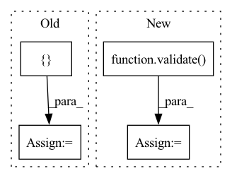

Pattern ID :31069
Before Change
with torch.no_grad():
if onnx:
ort_inputs = { "input": to_numpy(extractor(batch))}
ort_outs = model.run(None, ort_inputs)
vad_outs = ort_outs[-2]
else:
outs = model(extractor(batch))After Change
for chunk in wav_chunks:
batch = VADiter.prepare_batch(chunk)
outs = validate( model, batch)
vad_outs = outs[-2]
states = []
state = VADiter.state(vad_outs)In pattern: SUPERPATTERN
Frequency: 3
Non-data size: 4
Instances Fragment ID: 91293969
Project Name: snakers4/silero-vad
Commit Name: bb02e92ff942228d3a8e63100fb17866a1ef113e
Time: 2020-12-14
Author: dvoronin322@gmail.com
File Name: utils.py
M Class Name: AnonimousClass
N Class Name: AnonimousClass
M Method Name: single_audio_stream(6)
N Method Name: single_audio_stream(7)
M Parent Class:
N Parent Class:
M File Name: utils.py
N File Name: utils.py
M Start Line: 276
M End Line: 294
N Start Line: 229
N End Line: 232
Before Change
// register hooks
hook_layers = ["layer1.2.conv3", "layer2.3.conv3", "layer3.5.conv3", "layer4.2.conv3"]
source_layers = []
target_layers = []
register_hook(classifier, hook_function_wrapper(target_layers), hook_layers)
register_hook(source_classifier, hook_function_wrapper(source_layers), hook_layers)
source_dict = {}
source_weight = {}
for name, param in source_classifier.backbone.named_parameters():
source_weight[name] = param.detach()
source_dict["weight"] = source_weight
source_dict["layer"] = source_layers
// define optimizer and lr scheduler
optimizer = SGD(classifier.get_parameters(args.lr), momentum=args.momentum, weight_decay=args.wd, nesterov=True)
After Change
// evaluate on test set
classifier.load_state_dict(torch.load(logger.get_checkpoint_path("best")))
acc1 = validate( test_loader, classifier, args)
print("test_acc1 = {:3.1f}".format(acc1))
logger.close()
Fragment ID: 91293957
Project Name: thuml/transfer-learning-library
Commit Name: 8efc7bf39177663305131a3cb727269837794608
Time: 2021-03-10
Author: jiyf990330@163.com
File Name: examples-ft/classification/delta.py
M Class Name: AnonimousClass
N Class Name: AnonimousClass
M Method Name: main(1)
N Method Name: main(1)
M Parent Class:
N Parent Class:
M File Name: examples-ft/classification/delta.py
N File Name: examples-ft/classification/delta.py
M Start Line: 68
M End Line: 133
N Start Line: 68
N End Line: 135
Before Change
with torch.no_grad():
if onnx:
ort_inputs = { "input": to_numpy(extractor(batch))}
ort_outs = model.run(None, ort_inputs)
vad_outs = np.split(ort_outs[-2], audios_in_stream)
else:
outs = model(extractor(batch))
vad_outs = np.split(outs[-2].numpy(), audios_in_stream)After Change
for_batch = [x.prepare_batch(*y) for x, y in zip(VADiters, current_pieces)]
batch = torch.cat(for_batch)
outs = validate( model, batch)
vad_outs = np.split(outs[-2].numpy(), audios_in_stream)
states = []
for x, y in zip(VADiters, vad_outs): Fragment ID: 91293959
Project Name: snakers4/silero-vad
Commit Name: bb02e92ff942228d3a8e63100fb17866a1ef113e
Time: 2020-12-14
Author: dvoronin322@gmail.com
File Name: utils.py
M Class Name: AnonimousClass
N Class Name: AnonimousClass
M Method Name: state_generator(7)
N Method Name: state_generator(8)
M Parent Class:
N Parent Class:
M File Name: utils.py
N File Name: utils.py
M Start Line: 217
M End Line: 235
N Start Line: 176
N End Line: 179